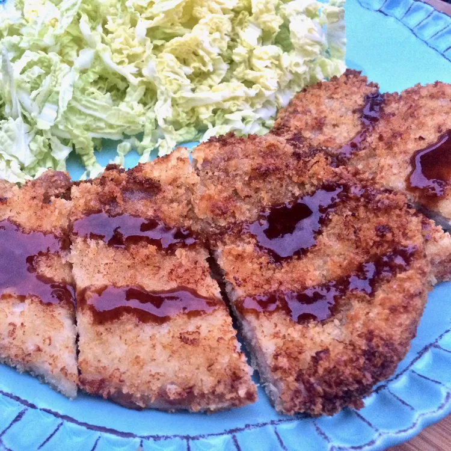

Japanese Air Friend Pork Tonkatsu

Tonkatsu is a Japanese version of deep-fried pork chops with a special tangy sauce. Though the air fryer will never duplicate a true deep-fried taste, the appliance is fast, cleanup is a breeze, and there is no used oil to store. Tonkatsu is usually served with raw cabbage, but use this handy air fryer technique, call it "fried pork chops", and serve with your family favorites. I won't tell them it's Japanese, if you don't!
Ingredients for Tonkatsu
- 2 large eggs
- 1 teaspoon vegetable oil
- salt to taste
- 2 cups panko bread crumbs
- 2 pounds pork sirloin chops, about 1/4-inch thick
- Any cooking spray
Ingredients for Sauce
- 1 cup ketchup
- 3 tablespoons Worcestershire sauce
- 4 teaspoons dry mustard powder
- 1 1/2 teaspoons garlic powder
- 1 1/2 teaspoons ground black pepper
Directions for Tonkatsu
- Preheat an air fryer to 400 degrees F (200 degrees C) according to manufactuerer's instructions.
- Stir together eggs, vegetable oil, and salt in a small bowl. Place panko crumbs on a seperate plate.
- Set a length of parchment or waxed paper about 15 inches long on a platter or cutting board.
- Dip each pork chop into the egg mixture, allowing excess to drip back into the bowl, then turn chops in panko crumbs. Cover the top of the chop with crumbs and press down to encourage them to stick. Place coated chops on the prepared parchment or waxed paper. Repeat until all chops are coated with panko crumbs on both sides.
- Spray both sides of each prok chop with cooking spray and place 2 or 3 chops into the air fryer basket, depending on the size of the basket
- Air fry for 6 minutes. Flip and cook until golden brown and an instant read thermometer inserted into the center reads 145 degrees F (63 degrees C), about 5 minutes more. Transfer chops to a plate and keep warm. Repeat with reamining chops.
- Serve chops with tonkatsu sauce
Directions for Sauce
- Stir together ketchup, Worcestershire sauce, mustard powder, garlic powder, and pepper in a small bowl until well combined. Cover and refrigerate before serving to blend flavors, at least 1 hour.
Return Home